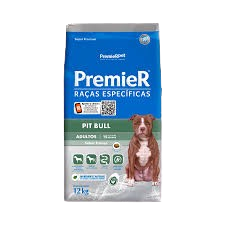
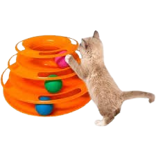
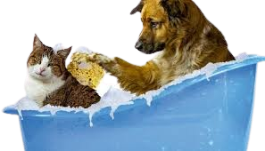

<!DOCTYPE html>
<html lang="pt-BR">


<head>
    <meta charset="UTF-8">
    <meta name="viewport" content="width=device-width, initial-scale=1.0">
    <title>Document</title>

    <link rel="stylesheet" href="css/global.css">

    <link href="https://cdn.jsdelivr.net/npm/bootstrap@5.3.3/dist/css/bootstrap.min.css" rel="stylesheet"
        integrity="sha384-QWTKZyjpPEjISv5WaRU9OFeRpok6YctnYmDr5pNlyT2bRjXh0JMhjY6hW+ALEwIH" crossorigin="anonymous">
    <script src="https://cdn.jsdelivr.net/npm/bootstrap@5.3.3/dist/js/bootstrap.bundle.min.js"
        integrity="sha384-YvpcrYf0tY3lHB60NNkmXc5s9fDVZLESaAA55NDzOxhy9GkcIdslK1eN7N6jIeHz"
        crossorigin="anonymous"></script>
</head>

<body>
    <div id="wrap"></div>
    
    <script src="js/config.js"></script>
    <script src="js/funcoes.js"></script>
    <script src="js/global.js" defer></script>
    <script src="js/modelo.js" defer></script>
        
<a href="" class="mx-lg-2"></a>
    
</body>
</html>

    <!--
    <header>
        <h1>Bem-vindo ao PetGuard</h1>
        <nav>
            <ul>
                <li><a href="Inicio">Inicio</a></li>
                <li><a href="Cadastro">Cadastro</a></li>
                <li><a href="produtos">Produtos</a></li>
                <li><a href="servicos">Serviços</a></li>
                <li><a href="contato">Contato</a></li>
            </ul>
        </nav>
    </header>
    <main>
        <section id="produtos">
            <h2>Produtos</h2>
            <div class="produto">
                
                <h3>Ração para Cachorros</h3>
                <p>Descrição do produto.</p>
                <p>A Ração Premier Pitbull é uma ração desenvolvida especificamente para cães da raça Pit Bull. É rica em BCAA e L-carnitina para auxiliar na musculatura e queima de gordura, contém ingredientes que promovem a saúde das articulações e do intestino, e é livre de transgênicos e corantes artificiais. Indicada para cães adultos a partir de 15 meses.</p>
            </div>
            <div class="produto">
                
                <h3>Brinquedos para Gatos</h3>
                <p>Descrição do produto.</p>
                <p>O Brinquedo Torre de Bolinha Crazy Tower é um brinquedo interativo para gatos que possui três bolinhas coloridas que se movem, incentivando a atividade física e o instinto de caça dos felinos. Fabricado em plástico resistente e atóxico, ele ajuda a reduzir o estresse e a ansiedade dos gatos, mantendo-os entretidos por mais tempo.</p>
            </div>
        </section>
        <section id="servicos">
            <h2>Serviços</h2>
            <div class="servico">
                <h3>Banho e Tosa</h3>
                
                <p>Descrição do serviço.</p>
                <p>O serviço de banho e tosa é crucial para a higiene e bem-estar dos pets, mantendo-os limpos, prevenindo problemas de pele, melhorando o conforto e proporcionando bem-estar mental. Profissionais qualificados realizam o serviço, garantindo a saúde e segurança dos animais.</p>
            </div>
            <div class="servico">
                <h3>Consultas Veterinárias</h3>
                <p>Descrição do serviço.</p>
                <p>Durante a consulta, o veterinário: </p>
                    <p class="seta-direita">&#x2192; Verifica os sinais vitais do animal</p>
                    <p class="seta-direita">&#x2192; Avalia o estado de saúde do animal</p>
                    <p class="seta-direita">&#x2192; Identifica a espécie, raça, sexo, nome e idade do animal</p>
                    <p class="seta-direita">&#x2192; Analisa os sintomas relatados pelo tutor</p>
                    <p class="seta-direita">&#x2192; Realiza exames de rotina, como amostras de sangue, urina e fezes</p>
                    <p class="seta-direita">&#x2192; Prescreve medicamentos</p>
                    <p class="seta-direita">&#x2192;  Orienta sobre vacinas, vermifugações e cuidados gerais</p>
                    <p>O veterinário pode também realizar cirurgias, como dentárias, oftálmicas e ortopédicas. </p>
                    <p>É importante fazer consultas veterinárias regulares para manter o animal saudável.</p>
            </div>
        </section>
    </main>
    <footer>
        <p>&copy; 2025 Petshop. Todos os direitos reservados.</p>
    </footer>-->
